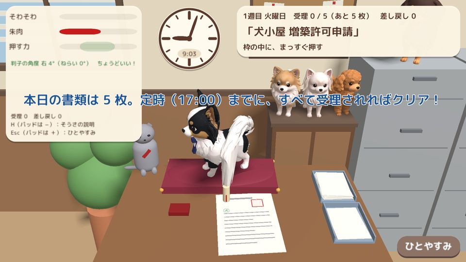
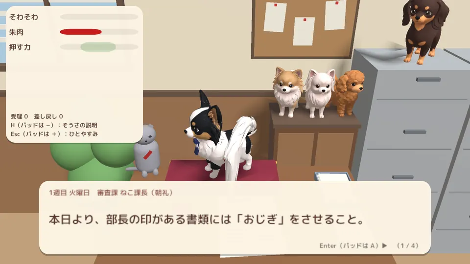
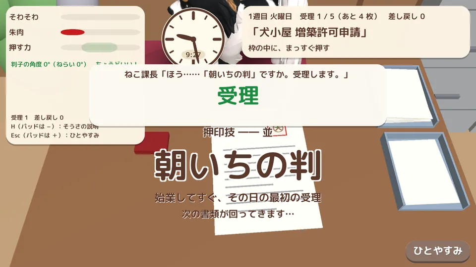
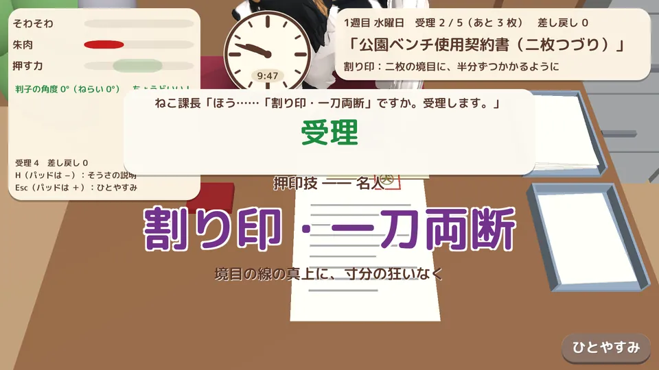
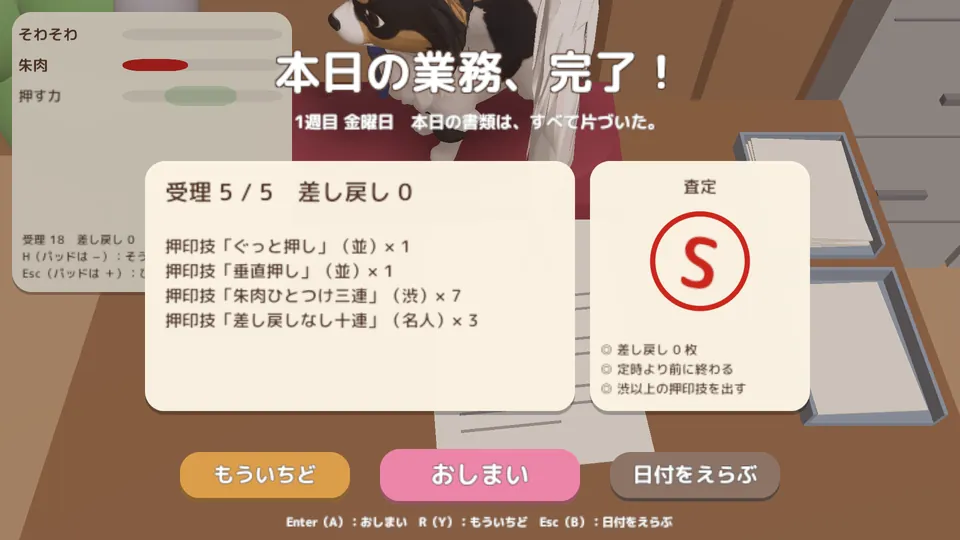
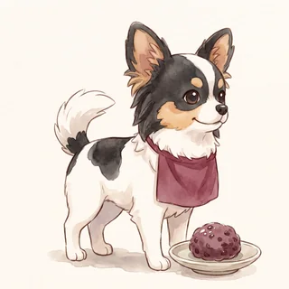
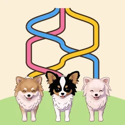

トップ › チワ判子課長
チワ判子課長
しっぽで押す、大まじめなお役所仕事
その判、しっぽで押します。
わんわん市役所のおはぎ課長は判子に命をかけるチワワ。しっぽの先にぶら下げた判子を朱肉につけて、書類の枠の中へまっすぐ、ちょうどいい強さで押してください。押した判は審査課のねこ課長がきびしく審査します。
- 値段無料（広告なし）
- 機種PC のブラウザ
- 言語日本語
- 時間15 分ほど

とくちょう
- 1
しっぽの先の判子
しっぽは勝手にゆれます。ゆれる判子を書類の枠の中へ。まっすぐ、ちょうどいい強さで。
- 2
月曜から金曜の 1 週間
日ごとに「おじぎ押し」「割り印」など、しょうもないけれど大事な決まりが増えていきます。
- 3
押印技
「垂直押し」「三度目の正直」……押し方しだいで技に名前がつき、ずかんに集まります。
- 4
押した跡は「犬」の字
かすれ・にじみ・欠けが字の見え方で分かります。
- 5
審査はきびしいねこ課長
はみ出す・曲がる・かすれると「差し戻し」。定時の 17:00 までに全部受理されればクリア。
がめん




← 横にスクロールできます →
あそびかた
- マウスで判子をねらい、ホイールで高さを変えます（キーボードやゲームパッドでも遊べます）。
- 左ボタンを長押しし、押す力のバーが緑の帯に入ったところで離すときれいに押せます。朱肉も同じように。
- 右ボタンを押したまま左右に動かすと判子が回ります。しっぽがそわそわしてきたら「深呼吸」。
- はみ出す・曲がる・かすれる・にじむと差し戻し。定時までに全部受理されればクリアです。
登場する犬たち

おはぎ課長
チワワ
わんわん市役所の課長。判子に命をかける。紺のネクタイに黒い腕カバー。
ねこ課長
審査課の課長
押された判を受理するか差し戻すか決める。朝礼もする。
職員の犬たち
きなこ・しらたま・ようかん・どらやき
課の部屋の棚の上からそっと見守っています。
よくある質問
スマホで遊べますか？
いまはパソコンのブラウザ（unityroom）で遊べます。
広告や課金はありますか？
ブラウザ版にはどちらもありません。
本物の犬のしっぽに判子をつけても大丈夫？
判子を持てるのは、ゲームの中のおはぎ課長だけです。本物の犬のしっぽに物をつけたり、引っぱったりしないでください（犬はしっぽをさわられるのをいやがります）。
英語で遊べますか？
いまのブラウザ版は日本語だけです。
AI は使っていますか？
犬の 3D モデルは Meshy で作り、作者が選んで調整しました（チワちくRUN と同じモデル）。プログラムと画面の文章は Claude Code を使って書き、作者が確認しています。遊んでいる間に AI が何かを作ることはありません。音楽・効果音は人が作った素材です。
プライバシーについて（かんたんな説明）
- 個人情報やデータは集めません。アカウント登録もありません。
- 広告・アクセス解析・外部へのデータ送信はありません。
- 記録はブラウザの中に保存されます。
あそんでみる
ほかの作品
-
チワちくRUN
ちくわを集めながら障害物をよけてゴールへ。犬たちが駆けぬける 3D ランゲーム。
無料・広告なし・課金なしiPhone・iPad／PC -
くっつきチワだんご
うたた寝する飼い主のひざの上で犬たちが寄りそってお昼寝する落ちものパズル。
買い切り・広告なし（ブラウザ版は無料）iPhone・iPad／PC のブラウザ -

あみあみチワおさんぽ
三つ編みみたいにからまった犬たちのリードを入れかわりと持ちかえでほどくパズル。
無料（広告あり・広告の削除あり）iPhone・iPad／PC のブラウザ -
じりじりチワまて
「待て」のあいだにじりじり前に出る犬たち。「よし！」の瞬間、ぬけがけしたのはだれ？
無料（広告あり・広告の削除あり）iPhone・iPad